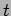
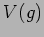
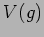

Next: Load
Up: Problem complexity metrics (PCM)
Previous: Contention profile
Contents
A given group will potentially have multiple observing windows when it should be attempted. During any given window the group can be considered to have a demand D on the time within that window. E.g. if the group has an (estimated) execution time and its window of opportunity is 1 then the group's demand over that window is
. If we add up the demand contributions of all the groups which are enabled at any given time we should have a measure of how much demand is placed on that instant. If this aggregate demand exceeds unity then it is likely that some of the groups will not be observed i.e. the requirement for time is greater than the time available.
There are several refinements that can be made on this estimate. Firstly we can work out the numerator fairly easily - it can usually be considered constant and known. The denominator is more of a problem. Firstly working out the window of opportunity from the group's time constraint window W is straightforward, however this window may extend from just a few minutes upto several days or even weeks. In the later case the group's target(s) may rise and set several times and the various implicit timing constraints may be broken on several occasions e.g. the lunar distance constraint will impose a varying overlap with the target visibility windows. If we consider each of the calculable constraints then we can work out the actual amount of time (within the window) that the group can
actually be observed - this gives us a revised (increased) estimate for the group's individual demand for those times within the new sub-windows.
Going on another stage we might consider those constraints which cannot be worked out in advance. A group may have a minimum seeing constraint - we cannot tell what the seeing will be like at any future time though we may be able to estimate the likeliness of attaining the group's minimum level. Likewise we can obtain estimates of extinction (perhaps including seasonal variation). We should in addition consider the probability that the selected time is even available for observing - weather and technical downtime mean that a certain fraction of time is lost - a crude climatological estimate might just give the average probability of bad weather (averaged over long periods), we might also have more accurate seasonal-adjusted climatological information, better still if we can predict for some time ahead based on current and recently collected weather data then we shall have a better demand estimate i.e. we are calculating the likely time available rather than the certain time available for the group.
Formally:- Let represent the estimated execution time of a group and the remaining useful time left for that group at time , then the partial demand of at time is defined as:
 where
and others, where  is the set of visibility windows for 's targets from onwards, is the set of windows satisfying observing constraints, the set of nights from onwards.
where
and others, where  is the set of visibility windows for 's targets from onwards, is the set of windows satisfying observing constraints, the set of nights from onwards.
Some stuff on seeing/extinction stats. More on weather/technical downtime.
If a group is to execute at some future time we need to know that the weather will be good at that time and that it will remain good for at least . From the weather stats:-
where represents the distribution of lengths of continuous good weather runs.
Next: Load
Up: Problem complexity metrics (PCM)
Previous: Contention profile
Contents
Steve Fraser
2008-01-31